| We had quite the month this month,
as we sold our home in Oklahoma City and went there to empty it out.
The trip back was an odyssey of bad weather and other adventures.
Emotionally and physically it was a trying month, but also
rewarding. |
|
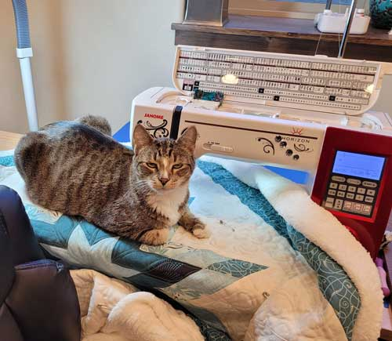 Rocket "assisting" me as I quilt a baby quilt |
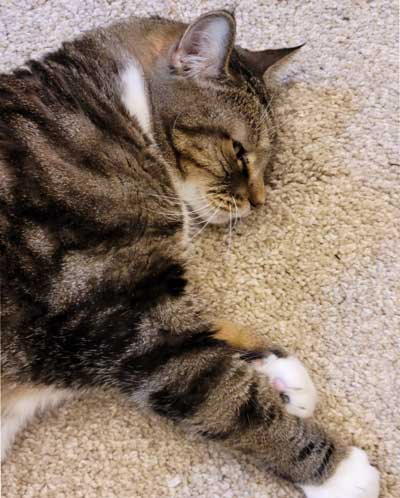 |
| Lily, requesting to be petted. | |
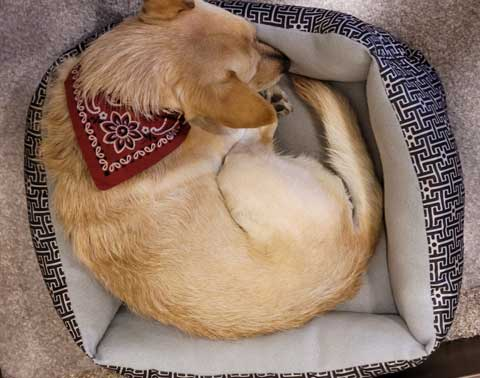 Buddy, wishing I didn't spend so much time in the sewing room |
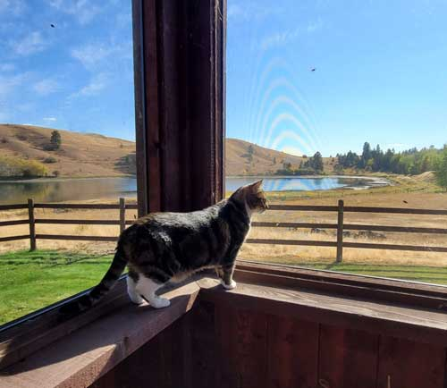 |
| Lily enjoying a sunny afternoon on the screened porch | |
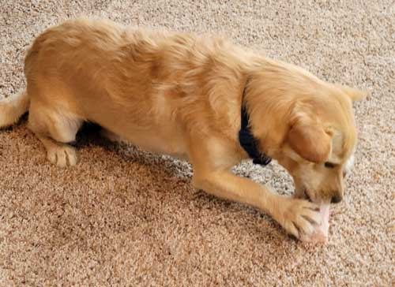 Buddy delights in the benefits of knowing the owners of the local
butcher shop |
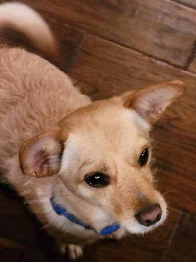 |
| Buddy, giving us the glassy-eyes in hopes of getting some of our food | |
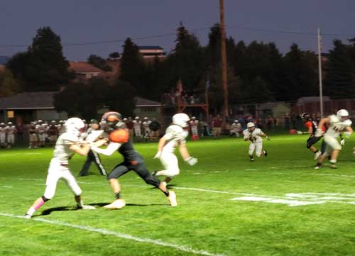 |
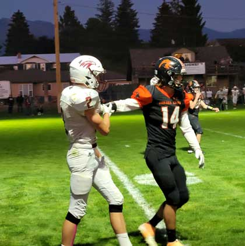 |
| Lions football. Colter and Braden are on the team. | Here Colter tells this guy, "Talk to the hand." |
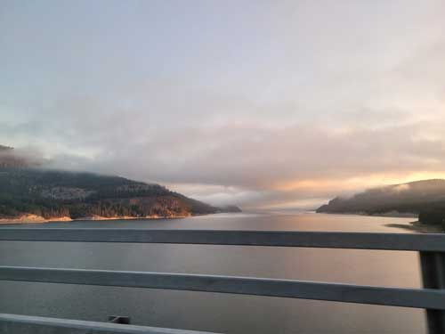 |
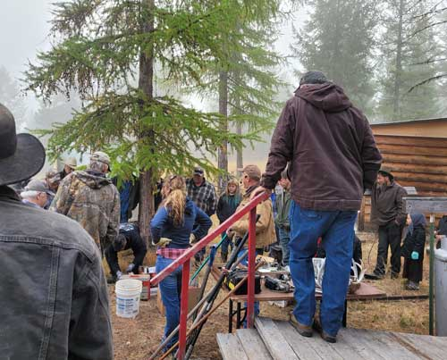 |
| One Saturday in early October we had a mini-adventure of a
day in the West Kootenai for our first auction experience. I prefer estate sales - you can get in & out faster! |
It started out cold and misty, but turned into a beautiful day. Buddy enjoyed all the neat smells. |
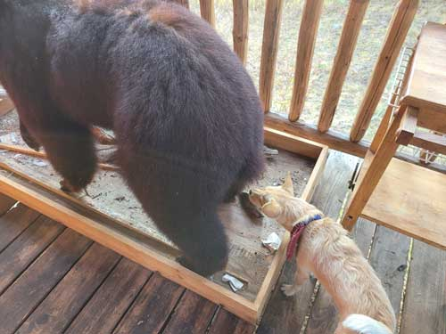 |
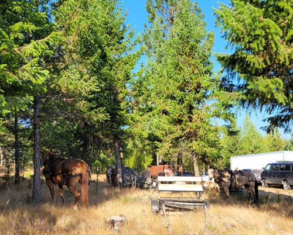 |
| The owner of the home had a LOT of amateur taxidermy which Buddy closely examined. | Since we were in Amish country, the parking lot looked a little different than usual. |
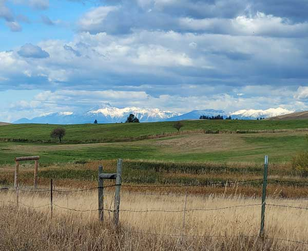 |
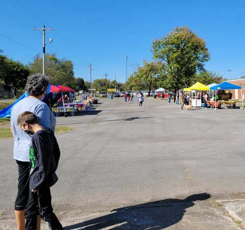 |
| A view into Canada from our driveway one clear morning | And now for something completely different! I got to visit
my family in Oklahoma briefly before I began the huge chore of packing up the OKC house. Here we are at a small festival. |
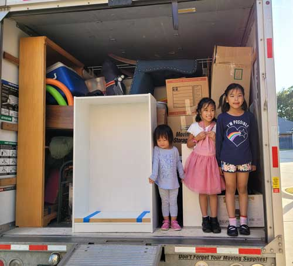 |
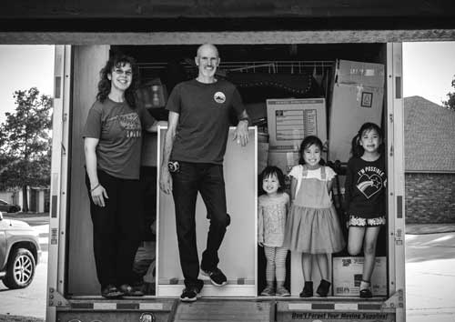 Jiayi has started a photography business, you can see she's really good! |
| We only managed to squeeze in one farewell visit, our
friends Wei & Jiayi and their girls Charlotte, Melody, and Isabel came to see us off as we finished packing the U-Haul. |
|
|
On our last night in OKC, we spent a magical evening at Chisholm
Creek. It's a group |
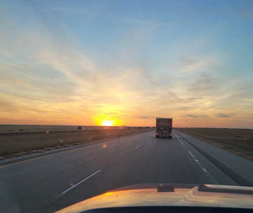 |
| Starting the trip from OKC to Eureka, MT. Normally a 3 day
drive, the weather was against us so it took 4 this time. Eric drove the 20 foot U-Haul and I followed in his truck. Day 1 was high winds all the way across Kansas. Poor Eric never ate all day, he was so nervous from being blown around in that giant sail of a vehicle. |
|
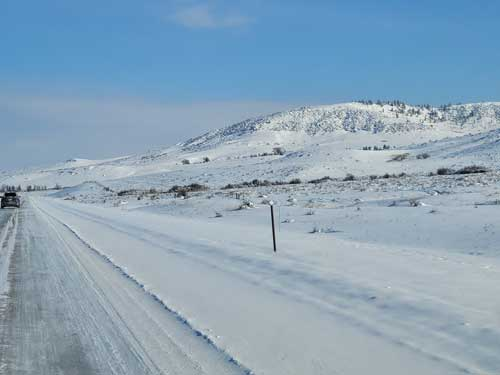 Day 2 ended early when we ran into a big snow & ice storm in
northern Wyoming. |
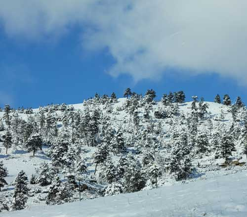 |
| The road conditions were so bad we had to find someone to hire
to drive the U-Haul the rest of the way to Eureka for us so that Eric could drive me in his truck. It was bad! |
|
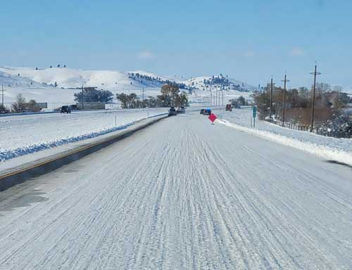 |
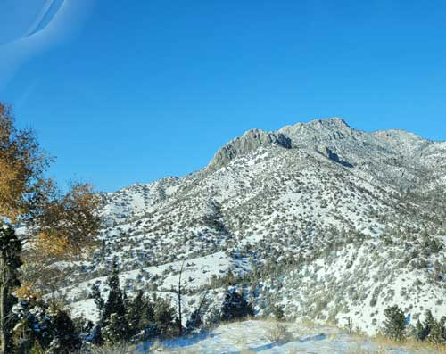 |
| We spent an entire day crawling along on Interstate highways
that looked like this. No sand, no plowing, just wreck after wreck. There were jackknifed semi trucks, what a mess! |
But at least the scenery was beautiful. |
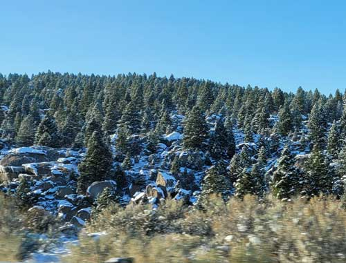 |
|
|
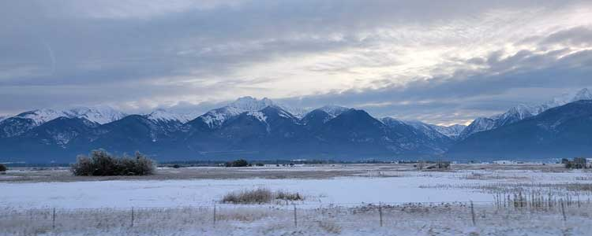 The Mission Mountains south of Flathead Lake |
|
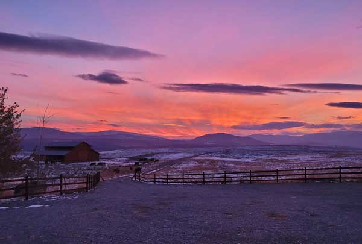 Finally home again, greeted by a beautiful sunset. |
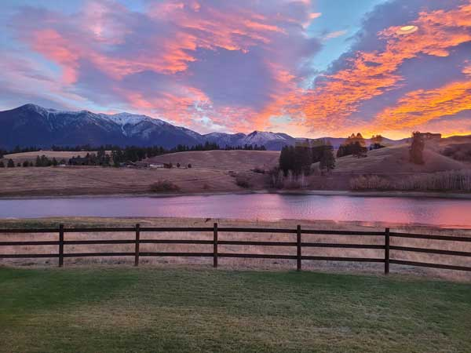 |
| Later in the month, we had this amazing sunrise also. | |
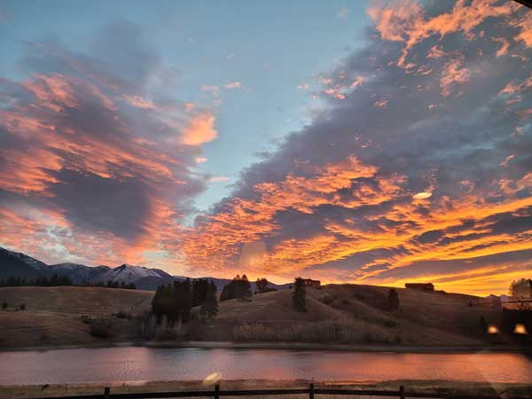 |
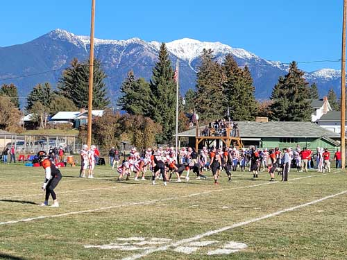 The final game of the year for the Lincoln County High School
Lions. A playoff game |
| One more shot of the beautiful sunrise. | |